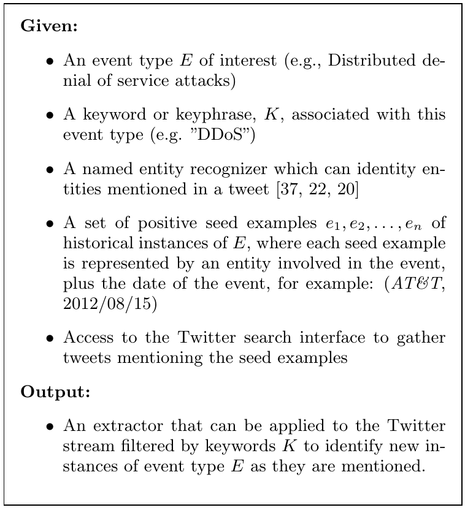
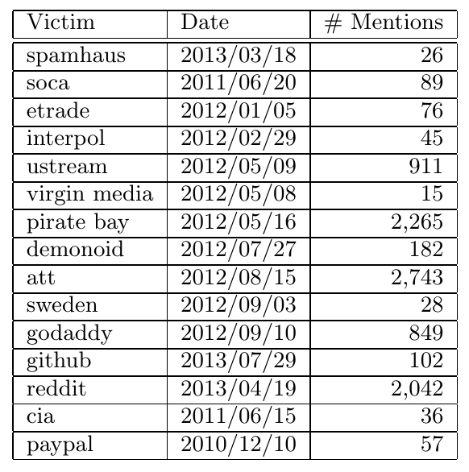
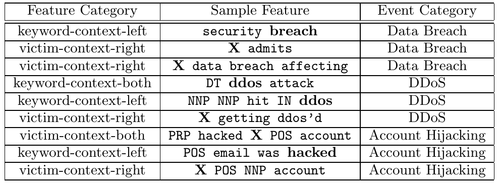

Detecting Cyber-attack Using Unsupervised Method
Posted by Taoran Ji
In the last blog, I have
introduced the importance of early detection of cyber-attack events, the
motivation of using social media as a source of information and explored one
soultion which is focused on early detecting using tech blogs. Intuitively,
tech blogs have are less ``fresh'' than Twitter, since they are usually
carefully written by experts. On Twitter, users are free to report and tweet
anything they find suspicious without overthinking about the details.
However, using tweets is never a trivial thing. Apart from the textual
complexity, I introduced in the last
blog, the most annoying
feature of the Twitter based research is that, in most cases, there are no
positive or negative samples available. In other words, it's hard to
collect a proper training and test data set. One straightforward way to solve
this problem is to ask researchers to identify and label the positive and
negative samples manually. But this doesn't work in a real-world
application since the volume of tweets is usually very huge. Thus,
reserachers are more inclined to use unsupervised methods to detect and
extract useful information from the sea of tweets.
In this blog, I'll explore one work which applies an unsupervised method
for the early detection of cyber-attacks.
Definition of Cyber-attack Event
The paper I'll explore in this blog is ``Weakly Supervised Extraction of
Computer Security Events from Twitter''. Though it proposed a weakly
supervised method for the computer security events detection, I still
consider it as an unsupervised method since only very few positive samples
are required, and the core contribution in this paper is critical
information mining, which works in an unsupervised way.
Before exploring the details of the technology used in this paper, let's
first try to answer this most fundamental question: what is the definition
of cyber attack event? Intuitively, this problem can be answered from
a security angle. Let's see the description from
Techpedia.
“
Definition - What does Cyberattack mean? A cyberattack is deliberate
exploitation of computer systems, technology-dependent enterprises and
networks. Cyberattacks use malicious code to alter computer code, logic
or data, resulting in disruptive consequences that can compromise data
and lead to cybercrimes, such as information and identity theft.
I don't even want to read the entire description since it doesn't help us to
formulate the problem people want to solve. The issue here is that this
definition fails to connect the problem with the textual data we have. We
need a description which can cast the cyber attack detection problem into
the textual data mining or classification field. In the paper, the authors
defined the cyber attack event as a tuple (ENTITY, DATE). To further ensure
that this event is a security-related event, each event is expected to be
one of security categories named after the security keyword (e.g., hack,
DDoS).
With this definition, the problem is then transformed to a classification
paradigm, that is, filter tweets by event type related keywords and then
identify tweets that are related to unknown events. With this idea in mind,
the workflow proposed in the paper is very intuitive and easy to understand.

Collection of Seed Events and Candidate Events
Collecting seed events is pretty straightforward, information analysts
already prided a set of 10 - 20 seed events for each type of cyber attacks.
For instance, the seed instances for DDoS attacks are shown in the following
table. As we can see, each entry is presented in the tuple (ENTITY, DATE).
In particular, ENTITY here is the victim name in the table.

Not like their names, candidate events are in fact collections of suspicious
tweets. This process consists of three submodules. First of all, candidate
tweets are extracted from Twitter Streaming API using the keywords like
hacked, ddos and breach. Secondly, the extracted tweets will be put into an
NLP pipeline, in which each component of tweets will be further analyzed.
For instance, date contained in the tweet will be normalized and collected.
The contextual environment of keyword will also be collected since the
authors think that the neighbors of keywords will also contribute to the
classification. The following are some examples of contextual features.

Classification
As we discussed before, there are no classified training data available in
this case. Though researchers can get some instances from experts, it needs
too many human powers to collect enough training samples. So in this
situation, we have a lot of unlabeled events. If we treat all these samples
as negative points, then we will train a biased classifier since many of
them are in fact positive points. Meanwhile, treating every sample as
positive is not a choice, either. The authors gave a smart way to solve this
problem. They used the concept of expectation. In particular, they want to
maximize the likelihood term over the positive seed instances with
a regularization that encourages the expectation over unlabeled data to
match the user provided target expectation. First of all, it's easy to
understand why we want to maximize the likelihood of seed instances. Second,
they do this maximization under one condition, that is, try to make the
differences between expectations of unlabeled data and user expectation as
small as possible. In this paper, the authors proves that this method has
better performance than the traditional classifiers like SVM.
Afterword
Cyber-attack detection and characterization using open-source data is still
an open research field. Not like the traditional security field, in this
research, people are more focused on using maching learning or data mining
methods to identify indicators from the sea of open source information. In
this blog, we explore and discuss one work in this field. Though it works
better than other general methods like SVM, it still needs to be further
improved since its performance depends on the a user-defined expectation
value which is very hard to determine in real-world application.